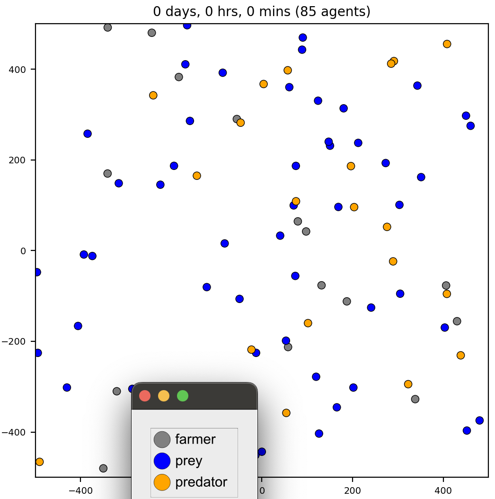
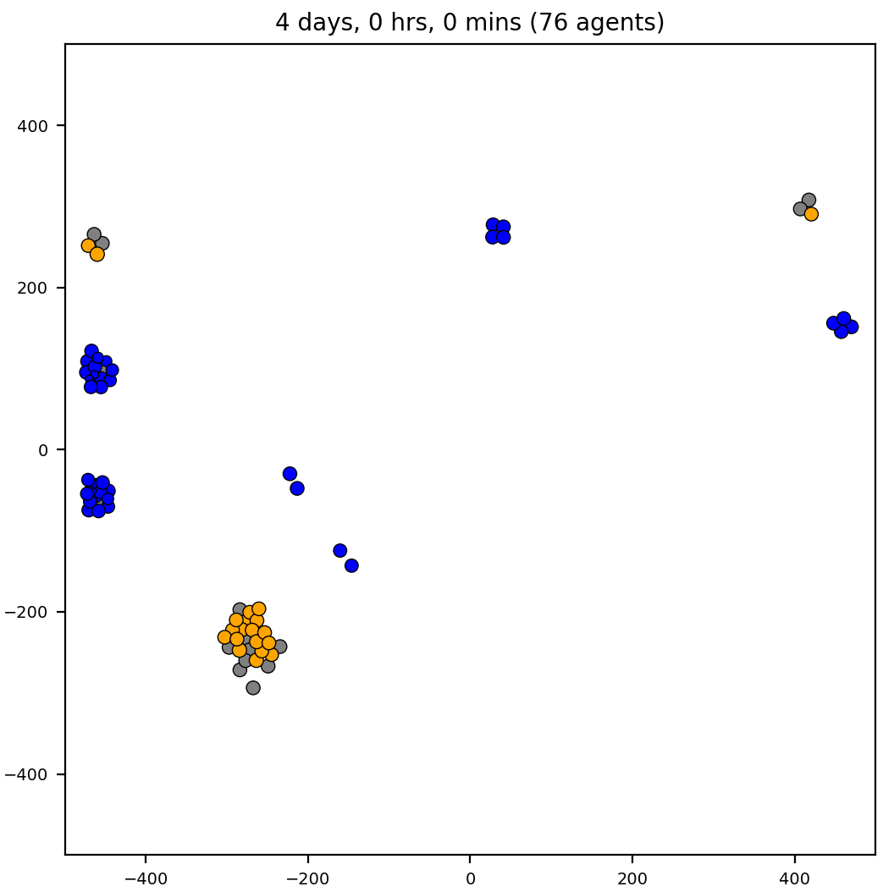
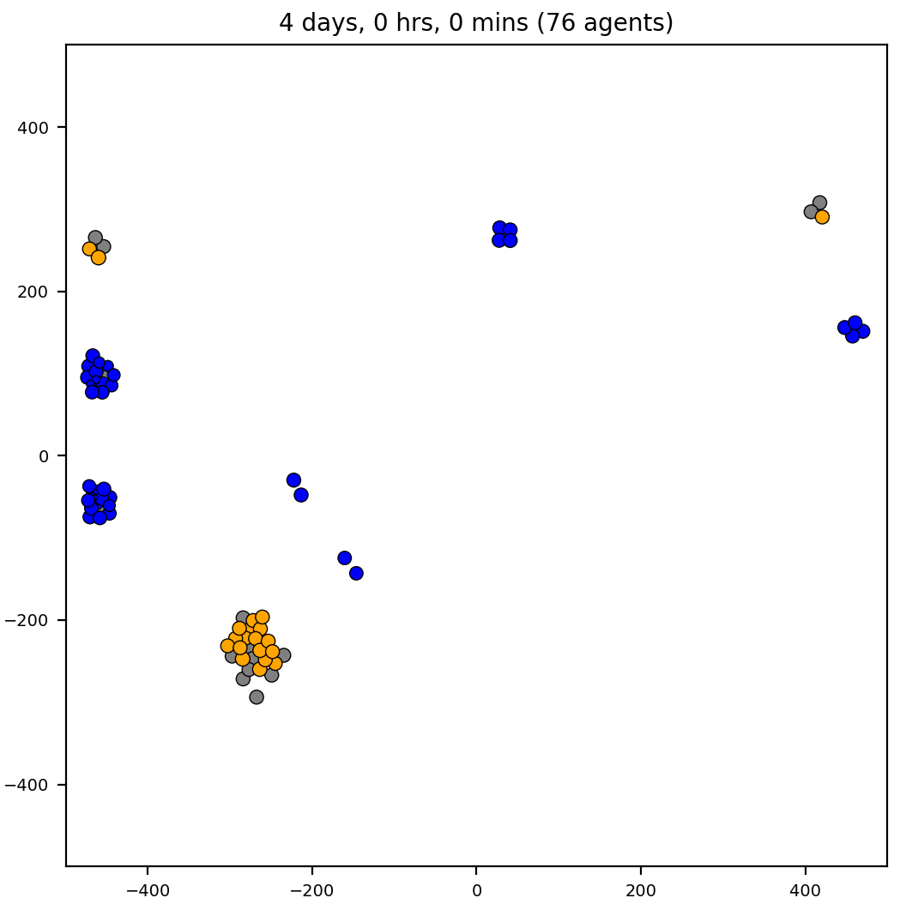
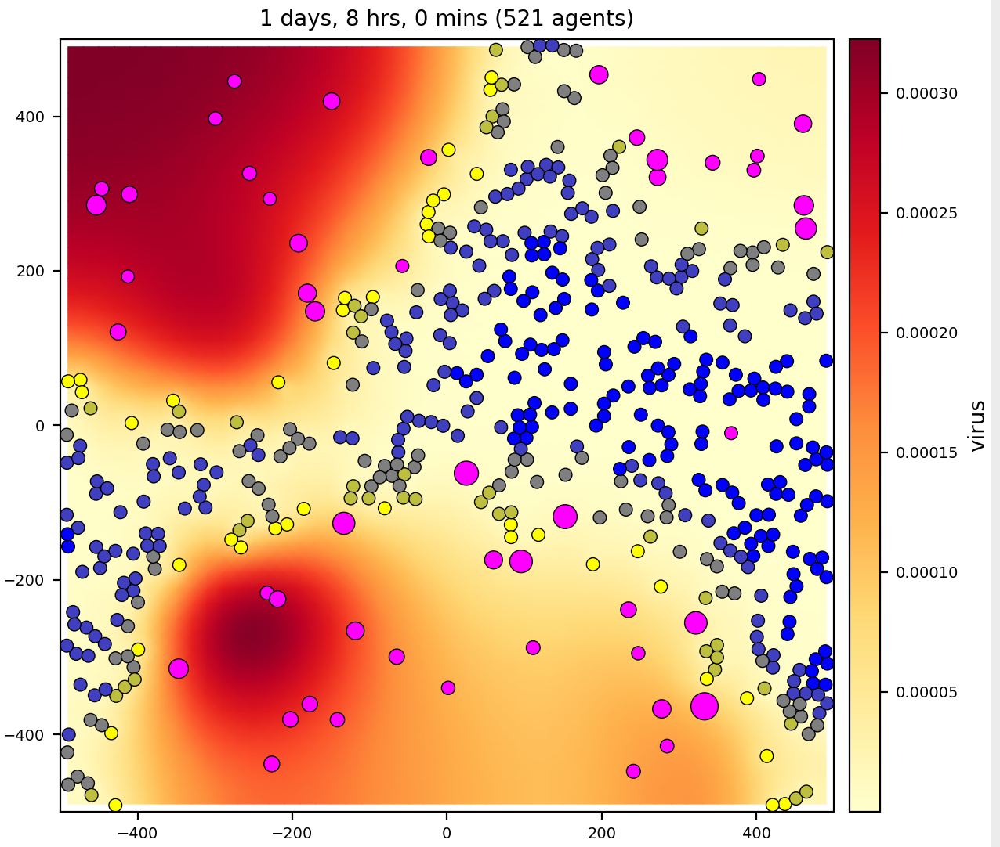

PhysiCell gallery
PhysiCell comes bundled with several sample models. The typical workflow when working with
the core PhysiCell framework is to use different Makefile "targets", i.e., `make [sample]`.
Refer to the 2023 hackathon slides for details.
For detailed information about the sample models, you can create a free account on nanoHUB and visit the apps for each project:
For this gallery, we used PhysiCell Studio to run and visualize the sample models. Be aware, however, that the XML configuration files for each sample project in the PhysiCell GitHub repository may not match the respective configuration files found in the Studio (/config). There are various reasons for this, one being the legacy ("hierarchical") XML format versus the "flattened" format required by the Studio (explained a bit more in the Studio Guide).
We also caution that some of the executable models have not been updated to use the more modern "interactions" and "rules" that appeared in more recent versions of PhysiCell. Therefore, if you do use the Studio to run and visualize results, some of the parameters may not reflect the behaviors a model exhibits. That's because the behaviors have been provided in C++, rather than in the XML.
Click on any thumbnail image below to enlarge it.
template

A very simple model that has 1 cell type ("default") and 1 (unused) substrate ("substrate").
The number of initial cells (=5) are specified as a `User Parameter`. The simulation time is 5 days and results are output every hour. This cell type has a
phenotype that includes:
- cell cycle resulting in proliferation
- cell death
- default adhesion and repulsion (mechanics)
- no motility
- no secretion
biorobots


- 3 cell/agent types: director, cargo, and worker
- 2 substrates (signals): director, cargo
- workers pickup and deliver cargo to directors, using chemotaxis to signals
cancer biorobots
Similar to the biorobots sample, but now delivering a drug to treat a tumor.
Therapy (cargo and worker cells) appears at 7 days, after the tumor has grown in size.


- 3 cell types: cancer, cargo, and worker
- 3 substrates: oxygen, chemoattractant, therapeutic
celltypes3
heterogeneity
predator-prey-farmer
The classic predator-prey, and uh, farmer :-)

 

- 3 cell types: farmer, prey, and predator
- 3 substrates: food, prey signal, predator signal
virus-macrophage
Epithelial cells uptake virus. Epithelial cells are not motile; macrophages are.
Macrophages chemotax to virus.

- 2 cell types: epithelial, macrophage
- 2 substrates: virus, interferon
worm
interaction
mechano